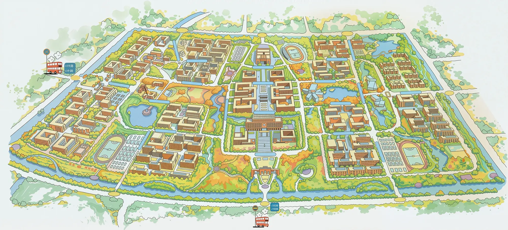

1. 连接服务
本页只调用本队契约 contracts v0.1 草案；不含任何平台密钥，也不直连模型。真实服务地址由 A 确认后填入。
2. 场景与偏好
3. 校园地图（AI 生成示意）

地图图片没有加载成功（本地缺文件或被拦截）：这里只保留上面的文字说明，场景选择、聊天、建议与任务照常可用。
4. 宠物与动作
动作：待机（默认，尚未收到服务响应）
动作只取契约白名单（idle/happy/think/sleep/eat/roll/sad）。贴图取自旧原型素材库的 4 只宠物，每只 7 个动作共 28 个 GIF，已由本项目用 tools/convert-legacy-pets.py 统一转码为动画 WebP（512×512、透明底、12 帧、约 1 秒循环、单文件 ≤300 KB），并逐条登记在 content/assets/pet-ui/source-register.csv；旧项目的遗留音频（.ogg）本轮不引入。
5. 对话与回复
6. 建议：接受或拒绝
7. 任务状态与完成反馈
8. 失败、等待与重试
等待中按钮会禁用；失败会显示服务返回的错误码；可重试的错误会给出“重试”，并复用同一个 event_id 与幂等键。
9. 来源引用
10. 定位与摄像头授权
11. 证据面板（录屏用）
这里只显示可公开的请求/响应摘要（不含消息原文以外任何隐私、也不含任何密钥），方便录屏时说明“同一版本、同一事件”。
12. 联调时建议走一遍的状态
- 未连接：页面显示“未连接”，发送按钮不可用。
- 连接成功：徽标显示 mock 或 live，会话已建立。
- 正常回复：图书馆场景聊天得到建议，接受后出现任务。
- 拒绝路径：换一次建议点“拒绝”，确认没有发出请求、没有任务。
- 无建议：把场景切到宿舍或关闭主动建议后“进入场景”，确认没有编造任务。
- 刷新恢复：刷新页面，确认按任务标识恢复状态。
- 失败重试：停掉服务再发一次，确认出现 NETWORK_UNREACHABLE 与“重试”；重启服务后重试不重复生效。
- 权限拒绝：点两个“演练：我拒绝授权”，确认聊天与任务照常可用。